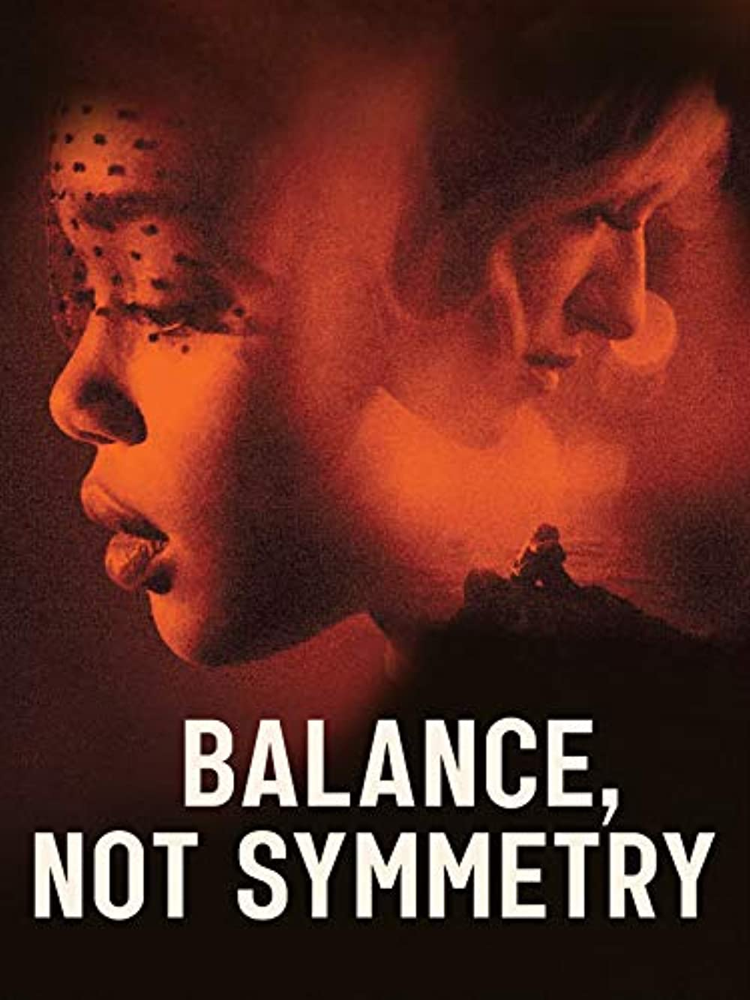

¿Que es esto?
Aquí veremos distintos tipos de media sobre la película "Balance not
Symmetry".
Tenemos disponible el trailer de la película, su cartel y la canción que da nombre al disco y la
película.
Cartel
Trailer
Canción
Esta película tiene una historia curiosa, ya que fue creada en un proceso poco común. El director pidió a la banda escocesa Biffy Clyro que hiciesen un disco y una vez este fue terminado, el director se inspiró en el álbum para hacer la película, es decir, fue la banda sonora la que dió vida a la película y no al revés, como suele ser lo común.